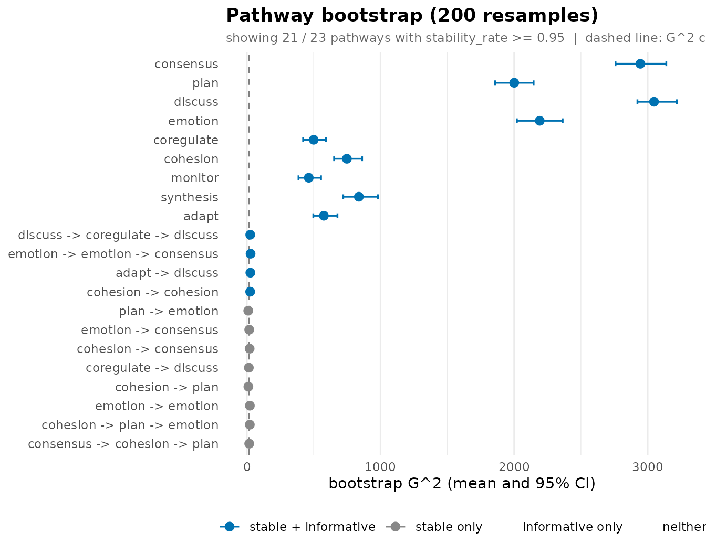
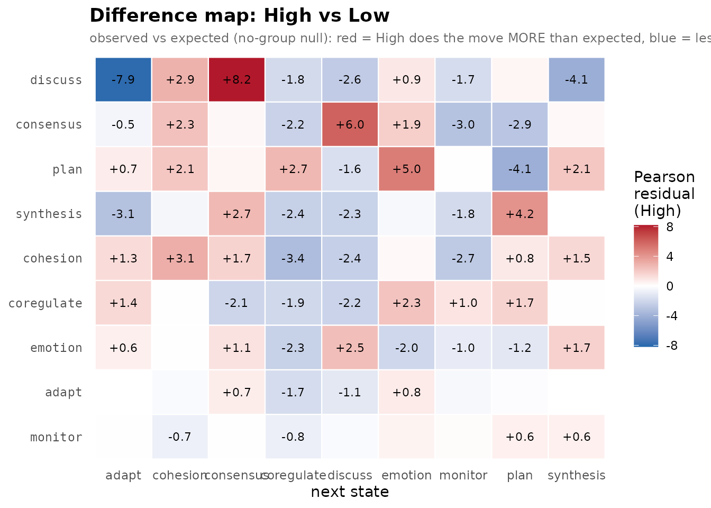

2. A complete analysis case: collaborative-regulation sequences
Source:vignettes/analysis-case.Rmd
analysis-case.RmdThis vignette runs one dataset all the way through and reads
the numbers at each step – not just what to call but
what the output means and what not to over-read. The
data are the bundled group_regulation_long event log:
students’ collaborative regulation-of-learning actions
(plan, monitor, consensus,
discuss, …), one row per action, with a High /
Low achievement label per student.
The arc that emerges, stated up front so the sections connect: regulation talk has short memory – the immediately preceding action carries most of the predictive signal – a handful of two-action routines reproducibly add to it, and high and low achievers regulate differently, which the permutation test confirms.
1. The data
data(group_regulation_long)
nrow(group_regulation_long)
#> [1] 27533
head(group_regulation_long)
#> Actor Achiever Group Course Time Action
#> 1 1 High 1 A 2025-01-01 08:27:07 cohesion
#> 2 1 High 1 A 2025-01-01 08:35:20 consensus
#> 3 1 High 1 A 2025-01-01 08:42:18 discuss
#> 4 1 High 1 A 2025-01-01 08:50:00 synthesis
#> 5 1 High 1 A 2025-01-01 08:52:25 adapt
#> 6 1 High 1 A 2025-01-01 08:57:31 consensus
sort(table(group_regulation_long$Action), decreasing = TRUE)
#>
#> consensus plan discuss emotion coregulate cohesion monitor
#> 6797 6623 4267 3075 2133 1839 1516
#> synthesis adapt
#> 729 554The nine actions are very unevenly used: consensus and
plan dominate, adapt and
synthesis are rare. That imbalance is the most important
fact about the corpus and it echoes through every result – a model that
just guesses consensus will look deceptively good, so the
interesting question is never “what is the modal next action” but
“which histories overturn that default”.
2. Fit
context_tree() reads the long log directly: name the
unit (actor), the clock (time), and the state
(action); it reshapes into one sequence per session and
fits. Sessions are split where the time gap is large.
tree <- context_tree(group_regulation_long,
actor = "Actor", time = "Time", action = "Action",
max_depth = 3L, min_count = 10L)
tree
#> <transitiontrees> 377 nodes, depth <= 3, 9 states [unpruned]
#> alphabet : adapt, cohesion, consensus, coregulate, discuss, emotion, monitor, plan, synthesis
#> fit on : 2000 sequences, 27533 observations
#> smoothing: floor(ymin=0.001, rule=interpolate) min_count = 10
#> (start) n=27533 -> consensus (0.25)
#> |-- adapt n=509 -> consensus (0.47)
#> | |-- consensus n=27 -> cohesion (0.48)
#> | |-- coregulate n=28 -> consensus (0.50)
#> | | `-- consensus n=21 -> consensus (0.43)
#> | |-- discuss n=259 -> consensus (0.47)
#> | | |-- consensus n=60 -> consensus (0.53)
#> | | |-- coregulate n=37 -> consensus (0.43)
#> | | |-- discuss n=48 -> consensus (0.52)
#> | | |-- emotion n=14 -> consensus (0.50)
#> | | |-- monitor n=25 -> consensus (0.40)
#> | | `-- plan n=26 -> consensus (0.42)
#> | |-- monitor n=16 -> consensus (0.50)
#> | `-- synthesis n=140 -> consensus (0.48)
#> | `-- discuss n=107 -> consensus (0.45)
#> |-- cohesion n=1695 -> consensus (0.50)
#> | |-- adapt n=130 -> consensus (0.54)
#> | | |-- consensus n=13 -> consensus (0.61)
#> | | |-- discuss n=65 -> consensus (0.55)
#> | | `-- synthesis n=32 -> consensus (0.56)
#> | |-- cohesion n=45 -> consensus (0.42)
#> | | `-- emotion n=24 -> consensus (0.46)
#> | |-- consensus n=84 -> consensus (0.51)
#> | | |-- cohesion n=11 -> plan (0.45)
#> | | |-- discuss n=13 -> consensus (0.61)
#> | | |-- emotion n=11 -> consensus (0.45)
#> ... 351 more nodes (use as.data.frame(x) or summary(x))The banner reports the depth, the node count, the alphabet, and the sequence/observation totals. The root line is the null model: the next action given no history. Every deeper context has to beat that to earn its place.
3. Inspect
summary(tree)
#> <transitiontrees summary> 377 nodes, depth <= 3, 9 states [unpruned]
#>
#> pathway depth count likely_next next_probability divergence
#> (start) 0 27533 consensus 0.2468674 NA
#> consensus 1 6329 plan 0.3957971 0.3340303
#> plan 1 6157 plan 0.3742082 0.2341431
#> discuss 1 3951 consensus 0.3211845 0.5556255
#> emotion 1 2837 cohesion 0.3253437 0.5551452
#> coregulate 1 1970 discuss 0.2736041 0.1808906
#> cohesion 1 1695 consensus 0.4979351 0.3149856
#> monitor 1 1433 discuss 0.3754361 0.2283039
#> synthesis 1 652 consensus 0.4630613 0.8917924
#> adapt 1 509 consensus 0.4741100 0.7892874
#> changes_prediction
#> NA
#> TRUE
#> TRUE
#> FALSE
#> TRUE
#> TRUE
#> FALSE
#> TRUE
#> FALSE
#> FALSE
#> # ... 367 more rows (use as.data.frame(tree) for the full table)
model_fit(tree)
#> logLik df nobs AIC BIC perplexity
#> 1 -45464.76 3016 27533 96961.51 121762.5 5.213661Perplexity is the readable scalar: the effective number of equally likely next actions. The uniform baseline is 9 (nine actions, no knowledge); the fitted tree’s 5.21 says recent history collapses nine possibilities to about 5.2. Real structure – but this is in-sample and the tree is over-grown, so read it as an optimistic bound. Sections 6 and 7 give the honest figure.
4. The pathway tables
Three named verbs each fix a useful sort over the one canonical schema.
common_pathways(tree, top = 8) # the highways
#> pathway depth count likely_next next_probability divergence
#> 1 (start) 0 27533 consensus 0.2468674 NA
#> 2 consensus 1 6329 plan 0.3957971 0.3340302623
#> 3 plan 1 6157 plan 0.3742082 0.2341431253
#> 4 discuss 1 3951 consensus 0.3211845 0.5556255176
#> 5 emotion 1 2837 cohesion 0.3253437 0.5551452430
#> 6 consensus -> plan 2 2336 plan 0.3754281 0.0006484903
#> 7 plan -> plan 2 2108 plan 0.3757116 0.0004321472
#> 8 coregulate 1 1970 discuss 0.2736041 0.1808905912
#> changes_prediction
#> 1 NA
#> 2 TRUE
#> 3 TRUE
#> 4 FALSE
#> 5 TRUE
#> 6 FALSE
#> 7 FALSE
#> 8 TRUE
divergent_pathways(tree, top = 8) # where adding history changes the prediction most
#> pathway depth count likely_next next_probability
#> 1 synthesis -> discuss -> consensus 3 10 coregulate 0.5956000
#> 2 consensus -> cohesion -> plan 3 12 plan 0.8268333
#> 3 synthesis 1 652 consensus 0.4630613
#> 4 cohesion -> discuss -> emotion 3 10 cohesion 0.4965000
#> 5 adapt 1 509 consensus 0.4741100
#> 6 monitor -> monitor -> discuss 3 12 discuss 0.2487500
#> 7 cohesion -> cohesion -> consensus 3 19 plan 0.3661053
#> 8 coregulate -> emotion -> monitor 3 13 consensus 0.3821538
#> divergence changes_prediction
#> 1 0.9397936 TRUE
#> 2 0.9259734 FALSE
#> 3 0.8917924 FALSE
#> 4 0.8716723 TRUE
#> 5 0.7892874 FALSE
#> 6 0.7829439 TRUE
#> 7 0.7560378 FALSE
#> 8 0.7523873 TRUE
sharp_pathways(tree, top = 8) # the most peaked next-action predictions
#> pathway depth count likely_next next_probability
#> 1 consensus -> cohesion -> plan 3 12 plan 0.8268333
#> 2 discuss -> coregulate -> cohesion 3 11 consensus 0.7217273
#> 3 coregulate -> coregulate -> plan 3 14 plan 0.7088571
#> 4 consensus -> adapt -> consensus 3 12 plan 0.6616667
#> 5 cohesion -> discuss -> synthesis 3 12 consensus 0.6616667
#> 6 emotion -> discuss -> cohesion 3 14 consensus 0.6380714
#> 7 discuss -> plan -> plan 3 11 consensus 0.6316364
#> 8 emotion -> emotion -> consensus 3 58 plan 0.6161034
#> divergence changes_prediction
#> 1 0.9259734 FALSE
#> 2 0.5087962 FALSE
#> 3 0.6616111 FALSE
#> 4 0.3790714 FALSE
#> 5 0.3634509 FALSE
#> 6 0.2248026 FALSE
#> 7 0.5802868 TRUE
#> 8 0.2405929 FALSERead the divergent table in two layers. The very top rows can have
large divergence on a small count – a short
history seen just over the min_count floor that happened to
resolve one way. Those are small-sample mirages; the bootstrap in
section 7 exists to disarm them. The rows that also carry a
large count are the well-supported redirections worth
quoting.
The sharp table teaches the same caution from the probability side: a
next_probability near 1 on a low count is a
near-empty cell after smoothing, not a law of behaviour. Sharpness
with support is a rule; sharpness without it is
noise.
5. Per-context diagnostics
tree_dependence() is the information-theoretic
decomposition the KL pruning rule thresholds: per context, how many
bits of next-action uncertainty the extra history
removes (entropy_drop), and whether it flips the modal
prediction.
tree_dependence(tree, sort_by = "entropy_drop", top = 8)
#> pathway depth count divergence entropy
#> 1 consensus -> cohesion -> plan 3 12 0.9259734 0.885185
#> 2 cohesion -> discuss -> discuss 3 13 0.6501997 1.599492
#> 3 synthesis -> discuss -> consensus 3 10 0.9397936 1.358019
#> 4 coregulate -> synthesis -> consensus 3 14 0.3945507 1.440219
#> 5 coregulate -> coregulate -> plan 3 14 0.6616111 1.347984
#> 6 discuss -> coregulate -> cohesion 3 11 0.5087962 1.160730
#> 7 monitor -> discuss -> monitor 3 13 0.4218380 1.520958
#> 8 monitor -> cohesion -> plan 3 10 0.4461585 1.432416
#> entropy_before entropy_drop likely_next likely_before changes_prediction
#> 1 2.289429 1.4042437 plan plan FALSE
#> 2 2.683111 1.0836194 consensus consensus FALSE
#> 3 2.344887 0.9868676 coregulate plan TRUE
#> 4 2.383187 0.9429680 plan plan FALSE
#> 5 2.276847 0.9288633 plan plan FALSE
#> 6 2.067552 0.9068226 consensus consensus FALSE
#> 7 2.401484 0.8805256 discuss discuss FALSE
#> 8 2.289429 0.8570129 consensus plan TRUEA large entropy_drop with
changes_prediction = TRUE is the most valuable kind of
context: it both sharpens and redirects. Watch for
negative entropy_drop – the longer history
left the next action more uncertain than its parent; that is
the textbook signature of a context pruning should remove.
6. Prune to the reliable tree
pruned <- prune_tree(tree, criterion = "G2", alpha = 0.05)
pruned
#> <transitiontrees> 23 nodes, depth <= 3, 9 states [pruned]
#> alphabet : adapt, cohesion, consensus, coregulate, discuss, emotion, monitor, plan, synthesis
#> fit on : 2000 sequences, 27533 observations
#> smoothing: floor(ymin=0.001, rule=interpolate) min_count = 10
#> pruned by: G2 alpha = 0.05
#> (start) n=27533 -> consensus (0.25)
#> |-- adapt n=509 -> consensus (0.47)
#> |-- cohesion n=1695 -> consensus (0.50)
#> | `-- cohesion n=45 -> consensus (0.42)
#> |-- consensus n=6329 -> plan (0.40)
#> | |-- cohesion n=795 -> plan (0.38)
#> | | `-- cohesion n=19 -> plan (0.37)
#> | `-- emotion n=830 -> plan (0.39)
#> | `-- emotion n=58 -> plan (0.62)
#> |-- coregulate n=1970 -> discuss (0.27)
#> |-- discuss n=3951 -> consensus (0.32)
#> | |-- adapt n=29 -> adapt (0.24)
#> | `-- coregulate n=486 -> consensus (0.32)
#> | `-- discuss n=88 -> consensus (0.27)
#> |-- emotion n=2837 -> cohesion (0.33)
#> | |-- emotion n=199 -> cohesion (0.35)
#> | `-- plan n=831 -> consensus (0.33)
#> | `-- cohesion n=33 -> cohesion (0.27)
#> |-- monitor n=1433 -> discuss (0.38)
#> |-- plan n=6157 -> plan (0.37)
#> | `-- cohesion n=221 -> plan (0.36)
#> | `-- consensus n=12 -> plan (0.83)
#> `-- synthesis n=652 -> consensus (0.46)The pruned banner reports the surviving node count and criterion;
compare it to the unpruned tree from section 2. Each
removed context failed a likelihood-ratio G-squared test against its
one-shorter parent: the extra history did not explain enough added
variation in the next action to justify keeping it. That the tree
collapses so far is itself a finding – most of the grown depth was
unsupported, and the durable structure lives near the root.
7. Held-out predictive quality
The honest, out-of-sample estimate comes from cross-validation, which
tune_tree() runs at the sequence level over a
(max_depth, min_count, ...) grid – no hand-made train/test
split. The in-sample perplexity is the optimistic bound; the
cross-validated winner is the figure to report.
model_fit(pruned)$perplexity # in-sample (optimistic)
#> [1] 5.427279
tg <- tune_tree(group_regulation_long,
actor = "Actor", time = "Time", action = "Action",
max_depth = 1L:3L, min_count = 10L, folds = 5L, seed = 1L)
attr(tg, "best") # cross-validated winner
#> max_depth nmin smoothing prune logLik n_scored
#> 1 1 10 floor(ymin=0.001, rule=interpolate) FALSE -46738.34 27533
#> perplexity n_nodes_avg folds_failed
#> 1 5.460492 10 0A cross-validated perplexity close to the in-sample value is the signature of a well-pruned model that generalises; a large gap would say prune harder.
mine_sequences() then surfaces the sessions the fitted
model predicts worst – the atypical regulation trajectories worth a
closer look – and score_positions() the individual moves it
is most blindsided by:
wide <- prepare_input(group_regulation_long,
actor = "Actor", time = "Time", action = "Action")
mine_sequences(pruned, newdata = wide, which = "surprising", n = 5L)
#> sequence_id n_scored log_lik perplexity
#> 1 1559 2 -8.349842 65.03470
#> 2 446 2 -6.908739 31.63833
#> 3 1823 3 -9.619186 24.68993
#> 4 1323 3 -9.542743 24.06875
#> 5 1671 3 -9.140954 21.05177
score_positions(pruned, newdata = wide, worst = 5L)
#> sequence_id position matched_context observed predicted_prob log_lik
#> 1 69 22 plan adapt 0.0009745006 -6.933585
#> 2 235 17 plan adapt 0.0009745006 -6.933585
#> 3 974 20 plan adapt 0.0009745006 -6.933585
#> 4 1227 7 plan adapt 0.0009745006 -6.933585
#> 5 1424 3 plan adapt 0.0009745006 -6.9335858. Bootstrap reliability
prune_tree() asked “which contexts pass a criterion
in this dataset?”. The bootstrap asks the stricter question –
“which pass reproducibly under resampling?” – and reports two
flags. stable: the count reproduces.
informative: the G-squared against the
parent reproducibly clears the chi-square bar. A claim worth making is
both.
boot <- bootstrap_pathways(pruned, iter = 200L, stat = "count", seed = 1L)
boot
#> <transitiontrees_bootstrap> 200 resamples
#> stability : count in [0.50, 1.50] x observed, p < 0.05
#> informative: G^2 > qchisq(0.95, df=k-1) = 15.51, threshold 0.80
#> pathways : 23 total, 22 stable, 14 informative, 13 both
#>
#> top pathways (stable + informative first):
#> pathway depth count p_stability stability_rate stable
#> consensus 1 6329 0.005 1 TRUE
#> plan 1 6157 0.005 1 TRUE
#> discuss 1 3951 0.005 1 TRUE
#> emotion 1 2837 0.005 1 TRUE
#> coregulate 1 1970 0.005 1 TRUE
#> cohesion 1 1695 0.005 1 TRUE
#> monitor 1 1433 0.005 1 TRUE
#> synthesis 1 652 0.005 1 TRUE
#> adapt 1 509 0.005 1 TRUE
#> discuss -> coregulate -> discuss 3 88 0.005 1 TRUE
#> informative_rate informative mean_G2 ci_G2_lo ci_G2_hi
#> 1.00 TRUE 2945.023 2759.031 3139.060
#> 1.00 TRUE 2000.937 1858.122 2146.064
#> 1.00 TRUE 3047.163 2922.933 3217.945
#> 1.00 TRUE 2191.558 2020.714 2363.409
#> 1.00 TRUE 499.947 421.021 592.660
#> 1.00 TRUE 748.394 652.807 862.595
#> 1.00 TRUE 463.252 386.340 554.916
#> 1.00 TRUE 838.135 721.241 981.181
#> 1.00 TRUE 575.970 497.155 678.049
#> 0.94 TRUE 25.259 14.108 39.538
#> # ... 13 more pathways (use summary(x) for full table)
head(summary(boot), 10)
#> pathway depth count likely_next next_probability
#> 1 consensus 1 6329 plan 0.3957971
#> 2 plan 1 6157 plan 0.3742082
#> 3 discuss 1 3951 consensus 0.3211845
#> 4 emotion 1 2837 cohesion 0.3253437
#> 5 coregulate 1 1970 discuss 0.2736041
#> 6 cohesion 1 1695 consensus 0.4979351
#> 7 monitor 1 1433 discuss 0.3754361
#> 8 synthesis 1 652 consensus 0.4662577
#> 9 adapt 1 509 consensus 0.4774067
#> 10 discuss -> coregulate -> discuss 3 88 consensus 0.2727273
#> divergence changes_prediction G2 p_stability stability_rate stable
#> 1 0.3340303 TRUE 2930.7338 0.004975124 1 TRUE
#> 2 0.2341431 TRUE 1998.5086 0.004975124 1 TRUE
#> 3 0.5556255 FALSE 3043.2993 0.004975124 1 TRUE
#> 4 0.5551452 TRUE 2183.3402 0.004975124 1 TRUE
#> 5 0.1808906 TRUE 494.0122 0.004975124 1 TRUE
#> 6 0.3149856 FALSE 740.1435 0.004975124 1 TRUE
#> 7 0.2283039 TRUE 453.5394 0.004975124 1 TRUE
#> 8 0.9091915 FALSE 821.7854 0.004975124 1 TRUE
#> 9 0.8132687 FALSE 573.8618 0.004975124 1 TRUE
#> 10 0.1663148 FALSE 20.2894 0.004975124 1 TRUE
#> informative_rate informative flip_consistency mean_count sd_count
#> 1 1.00 TRUE 0.920 6332.715 100.94595
#> 2 1.00 TRUE 0.920 6154.545 128.68644
#> 3 1.00 TRUE 0.920 3958.510 74.82871
#> 4 1.00 TRUE 0.635 2833.740 61.43675
#> 5 1.00 TRUE 0.990 1970.235 50.86063
#> 6 1.00 TRUE 0.920 1697.625 44.05506
#> 7 1.00 TRUE 1.000 1435.050 39.94616
#> 8 1.00 TRUE 0.920 653.945 25.96387
#> 9 1.00 TRUE 0.920 508.745 21.23499
#> 10 0.94 TRUE 0.795 87.320 10.91344
#> ci_count_lo ci_count_hi mean_next_probability sd_next_probability
#> 1 6124.575 6542.075 0.3958547 0.006290070
#> 2 5899.125 6410.275 0.3738465 0.006862613
#> 3 3840.975 4109.000 0.3208082 0.007235758
#> 4 2727.950 2957.025 0.3296368 0.006810490
#> 5 1873.925 2072.075 0.2729068 0.010699039
#> 6 1608.925 1775.025 0.4978701 0.011707013
#> 7 1360.975 1516.075 0.3761944 0.012606040
#> 8 609.925 709.175 0.4686046 0.019148014
#> 9 469.950 541.150 0.4770284 0.023094314
#> 10 68.000 108.050 0.2796210 0.040349747
#> ci_next_probability_lo ci_next_probability_hi mean_divergence sd_divergence
#> 1 0.3813899 0.4070608 0.3354751 0.009883194
#> 2 0.3607875 0.3870520 0.2345561 0.009013845
#> 3 0.3062034 0.3342840 0.5553488 0.013765563
#> 4 0.3178257 0.3452476 0.5579099 0.020526129
#> 5 0.2511473 0.2919913 0.1829999 0.015127767
#> 6 0.4753595 0.5194326 0.3179724 0.020838135
#> 7 0.3542807 0.3994265 0.2328599 0.021152572
#> 8 0.4382504 0.5126009 0.9244891 0.058973775
#> 9 0.4344480 0.5246681 0.8165718 0.048778787
#> 10 0.2125000 0.3626891 0.2100172 0.056914019
#> ci_divergence_lo ci_divergence_hi mean_G2 sd_G2 ci_G2_lo ci_G2_hi
#> 1 0.3146527 0.3518833 2945.02269 95.097359 2759.03102 3139.05998
#> 2 0.2175416 0.2543880 2000.93710 80.374254 1858.12242 2146.06441
#> 3 0.5321175 0.5837965 3047.16310 80.989452 2922.93286 3217.94484
#> 4 0.5219396 0.5993708 2191.55779 90.171397 2020.71427 2363.40858
#> 5 0.1572404 0.2100213 499.94690 44.662399 421.02122 592.65958
#> 6 0.2815670 0.3584219 748.39404 53.704653 652.80669 862.59461
#> 7 0.1936415 0.2726647 463.25194 44.020310 386.34025 554.91616
#> 8 0.8088775 1.0434987 838.13462 63.489164 721.24145 981.18141
#> 9 0.7370305 0.9219820 575.97036 42.832625 497.15525 678.04880
#> 10 0.1213538 0.3440351 25.25887 6.843082 14.10779 39.53764summary() sorts the trustworthy (stable and
informative) pathways first, so the top rows are the defensible set. The
two flags screen different failure modes. stable alone
keeps high-count noise pathways; informative alone could
surface a low-count borderline pathway whose sample G-squared is high by
chance. Their conjunction is the defensible set.
plot(boot)
#> `height` was translated to `width`.
In the forest plot each bar is a 95% bootstrap interval on G-squared; the dashed line is the chi-square critical value. A bar entirely to the right is reproducibly informative; a bar straddling the line is not safe to claim.
9. Do high and low achievers regulate differently?
Fit one tree per group in a single call with
group =, then test where the groups diverge with a
permutation null. The grouping variable is an external student
attribute (Achiever), not derived from the actions
themselves – otherwise the comparison would be circular.
grp <- context_tree(group_regulation_long,
actor = "Actor", time = "Time", action = "Action",
group = "Achiever", max_depth = 2L, min_count = 10L)
cmp <- compare_groups(grp, iter = 199L, seed = 1L)
cmp$omnibus
#> axis statistic value p_value
#> 1 behavioral count-weighted JSD (bits) 1772.142 0.005
#> 2 usage sum G^2 1356.465 0.005The omnibus table reports two axes. behavioral is
the count-weighted Jensen-Shannon divergence (bits) between the groups’
next-action distributions, summed over shared contexts – “given the same
history, do the groups do different things next?”.
usage is the summed G-squared homogeneity statistic –
“do they reach the same contexts at the same rates?”. Each
p_value comes from permuting the group labels.
plot_difference(grp, depth = 1L)
The per-context residual map shows where the groups differ:
red and blue cells are the contexts a high achiever and a low achiever
resolve toward different next actions. depth = 1L restricts
it to the single-action contexts so the rows stay readable; drop it (or
raise it) to inspect deeper histories.
Synthesis
Pulling the thread through every section:
-
The action alphabet is imbalanced – frequency is a
misleading lens and modal predictions are trivially
consensus/plan. - Memory is short – pruning collapses the tree to a small set of contexts, and held-out perplexity confirms the shallow model generalises.
- The insight is in the divergent, well-counted contexts – not the common ones, and not the spectacular low-count tail.
- Only the stable-and-informative pathways are claimable – the bootstrap is the trust filter between an eyeballed table and a finding.
- High and low achievers regulate measurably differently – the permutation test licenses the claim that the omnibus statistic is real, not a relabelling artefact.
Each claim is anchored to a function whose output you can re-run – the whole point of a pathway-centric, testable model.